Service integral
Aceite, filtros, bujía, puesta a punto y revisión general para que la moto ande fina y dure más.
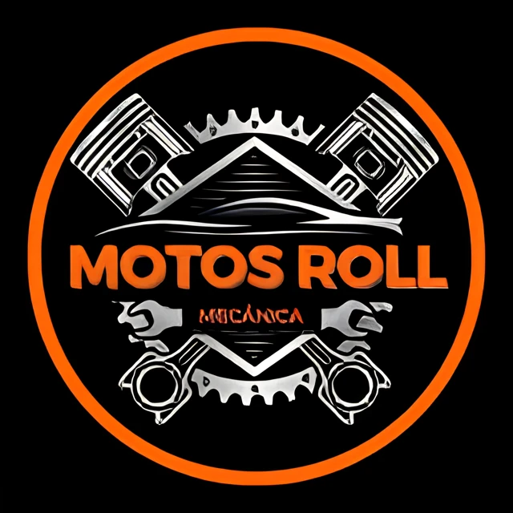
Taller de motos · Ituzaingó, Zona OesteDiagnóstico honesto, presupuesto sin sorpresas y trabajo prolijo. Dejás tu moto en manos que la tratan como propia.
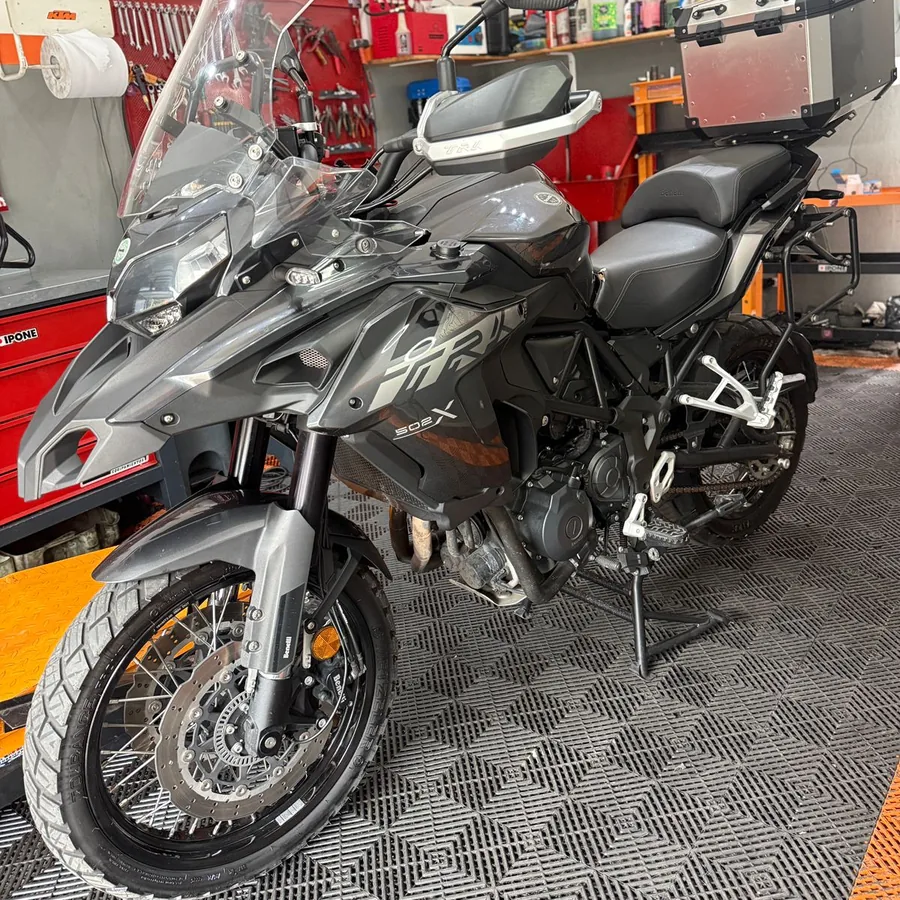
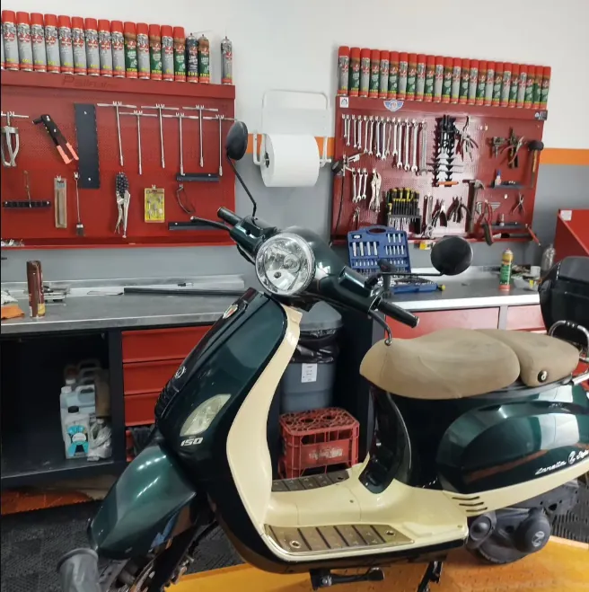
En Motos Roll trabajamos motos de calle, scooters, nakeds y enduro. No improvisamos: revisamos, te explicamos qué necesita realmente tu moto y recién ahí avanzamos.
Nos importa que entiendas qué le pasa a tu moto y por qué. Sin vueltas, sin trabajos de más, sin sorpresas en el precio final.
Del service de rutina al problema que nadie te resuelve. Trabajamos con diagnóstico y presupuesto claro.
Aceite, filtros, bujía, puesta a punto y revisión general para que la moto ande fina y dure más.
Reparaciones de motor, embrague, distribución y ajustes. Resolvemos lo simple y lo complejo.
Fallas de arranque, luces, batería, sensores y instalación. Encontramos el origen del problema, no el síntoma.
Pastillas, discos, purgado y regulación. Lo que te frena a tiempo no se negocia.
Kit de arrastre, cadena, correa y ajuste. Transmisión cuidada es menos consumo y más vida útil.
Cambio de cubiertas, revisión de suspensión y tren delantero para que la moto vaya firme y segura.
¿Tu moto tiene un problema puntual? Contanos qué le pasa y te orientamos.
Consultar por WhatsAppTrabajamos las marcas que más ruedan en Ituzaingó y la zona oeste, japonesas, indias y europeas. Servicio técnico para motos de calle, scooters y enduro, con repuestos y herramienta adecuada para cada una.
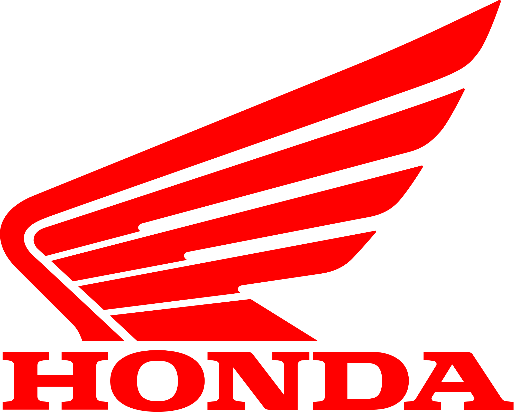
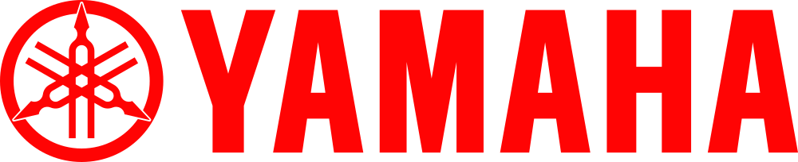
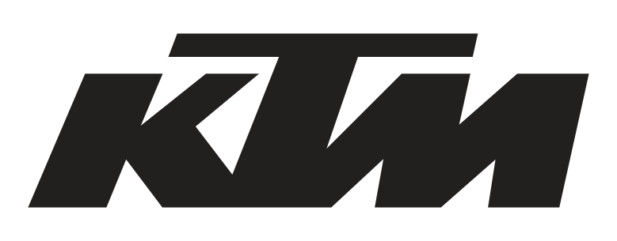
¿No ves tu marca? Consultanos igual. Atendemos la mayoría de las motos que circulan en la zona.
Cada cilindrada pide un mantenimiento distinto. Trabajamos las tres, con el criterio y la herramienta que corresponde en cada caso.
La moto de trabajo y de todos los días. Service completo, transmisión, frenos y puesta a punto para que no te falle un lunes a la mañana.
Calle, naked y scooters de mayor porte. Mecánica general, electricidad e inyección en motos que exigen más y piden el mantenimiento al día.
Motos de ruta, trail y deportivas. Diagnóstico, motor, suspensión y frenos con el cuidado que una moto de este porte necesita.
Las marcas que se fabrican y arman en el país, con repuesto accesible y respuesta rápida. Reparación de motos con costos claros y sin esperas eternas.
Japonesas, indias, chinas y europeas. Trabajamos con la información técnica de cada modelo y te avisamos de entrada si un repuesto tiene demora.
Si tu moto tuvo un siniestro, no te compliques con el trámite. Preparamos el presupuesto que pide tu compañía de seguros, con el detalle técnico y las fotos que necesitan para autorizar la reparación.
Sabés en todo momento qué se le hace a tu moto y cuánto va a costar.
Contás qué le pasa a tu moto por WhatsApp y coordinamos el día.
Hacemos el diagnóstico y detectamos qué necesita realmente.
Te decimos qué se hace y cuánto sale, antes de tocar nada.
Trabajamos prolijo, con la herramienta y el repuesto correcto.
Te avisamos cuando está lista y te explicamos qué se hizo.
Calle, naked, scooter y enduro. Fotos reales, sin filtros ni catálogos prestados.
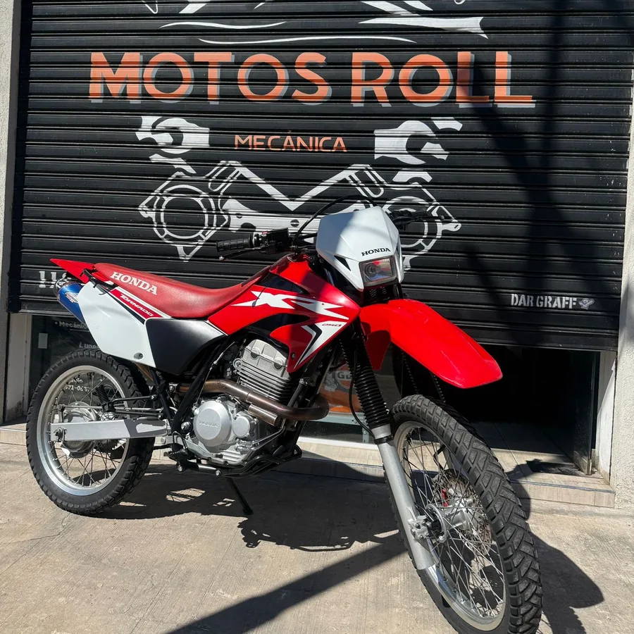
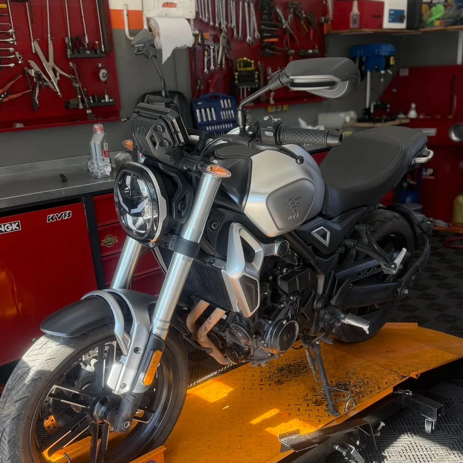
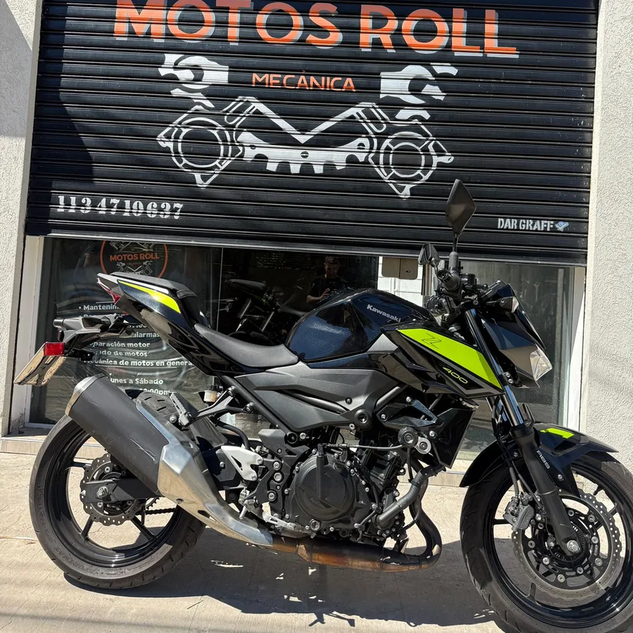
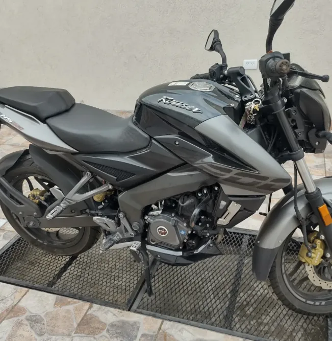
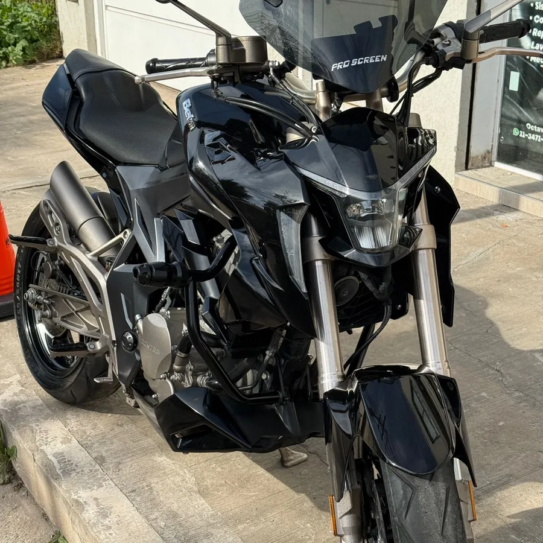
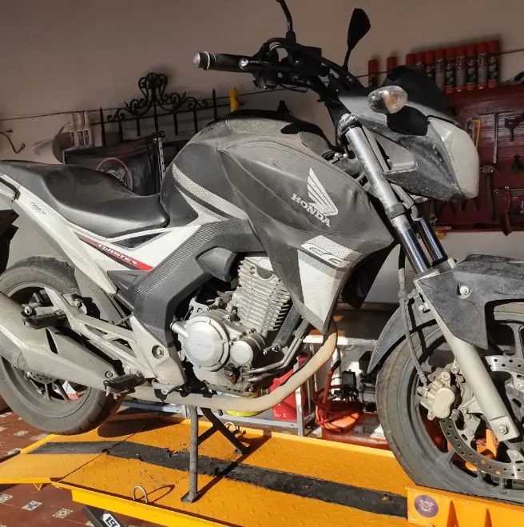
Escribinos hoy y coordinamos el turno. Diagnóstico honesto y presupuesto claro.
Pedir turno ahoraGeneral Fernández de la Cruz 896
Ituzaingó, Buenos Aires
Trabajamos con turno para poder dedicarle el tiempo que tu moto necesita. Escribinos por WhatsApp y coordinamos el día en minutos.
Siempre. Primero revisamos la moto, te decimos qué necesita y cuánto sale. Recién con tu confirmación avanzamos con el trabajo.
Somos un taller multimarca: Honda, Yamaha, Suzuki, Kawasaki, KTM, Bajaj, Hero, Voge, Siam, Husqvarna y TVS, entre otras. Trabajamos motos de calle, nakeds, scooters y enduro. Si tenés dudas con tu modelo, consultanos y te confirmamos.
Trabajamos baja cilindrada de 110 a 150 cc, media cilindrada de 150 a 300 cc y alta cilindrada de 300 cc en adelante, tanto en motos nacionales como importadas.
Sí. Preparamos presupuestos para compañías de seguros ante siniestros, con mano de obra y repuestos discriminados e informe fotográfico del estado de la moto. Autorizado el trabajo, hacemos la reparación en el taller.
En General Fernández de la Cruz 896, Ituzaingó, Buenos Aires. Atendemos a toda la zona oeste: Castelar, Morón, San Antonio de Padua, Haedo, Merlo y alrededores.
Un mensaje y coordinamos. Estamos para ayudarte a que tu moto ande como tiene que andar.